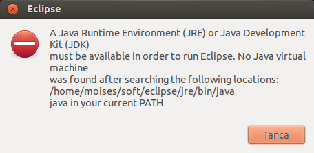
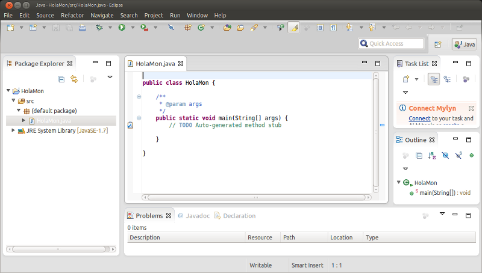

Tutorial d'instal·lació de Eclipse
Introducció
Aquest document descriu una manera d'instal·lar l'IDE Eclipse a un sistema Ubuntu. Per les característiques particulars de l'aplicació Eclipse, aquestes instruccions haurien de funcionar sense gaires canvis a altres sistemes operatius.
Instal·lació
Per la realització d'una instal·lació de Eclipse seguirem les següents passes des d'una consola:
Abans d'instal·lar Eclipse
Donat que Eclipse és una aplicació java, caldrà disposar d'una màquina virtual (JVM) al nostre sistema per a poder-la executar.
Tot i que virtualment podríem fer servir altres implementacions (ex. OpenJDK o gcj), seguirem el consell del fòrum d'Eclipse i farem servir el JDK d'Oracle.
Per altra banda, instal·larem la versió 7 de Java, la darrera disponible en el moment en que es va elaborar aquesta guia (juliol 2012)
Com que la llicència del jdk d'Oracle (abans Sun) va canviant el grau d'obertura des de la perspectiva d'algunes distribucions (com ara Ubuntu), és possible (de fet probable) que no disposem de cap versió instal·lada o que aquesta no sigui la desitjada.
Per a assegurar-nos que el nostre sistema disposa de la versió del JDK que volem, podem fer quelcom similar a:
$ sudo update-alternatives --config java
Si ens respon quelcom similar a:
update-alternatives: error: no alternatives for java.
o bé quelcom que no inclou la versió desitjada com ara:
Hi ha 2 possibilitats per a l'alternativa java (que proveeix /usr/bin/java). Selecció Camí Prioritat Estat ------------------------------------------------------------ * 0 /usr/lib/jvm/java-6-openjdk-i386/jre/bin/java 1061 mode automàtic 1 /usr/lib/jvm/java-6-sun/jre/bin/java 63 mode manual
caldrà instal·lar java. Trobareu una guia breu per Ubuntu aquí.
Obtenció de l'Eclipse
Si l'ús que hem de fer d'aquest IDE és molt introductori, podríem fer servir la versió d'Eclipse que es troba als repositoris d'Ubuntu, malgrat queda molt endarrerida respecte la darrera versió que es troba al lloc oficial del IDE: http://www.eclipse.org/downloads/
En el moment en que es va escriure aquesta guia, la darrera versió disponible era la 4.2, mentre que la dels repositoris anaven encara per la 3.7.
Aquesta guia proposa la instal·lació de la darrera versió disponible per desenvolupadors de java "Eclipse IDE for Java Developers".
D'aquesta manera ens trobarem un fitxer anomenat quelcom similar a: ./eclipse-java-juno-linux-gtk.tar.gz
Instal·lació de l'IDE
L'aplicació Eclipse és una mica particular en relació a d'altres, en el sentit que la seva instal·lació consisteix en simplement descomprimir el paquet i executar l'IDE.
Així, escollirem el directori on volem que quedi instal·lada l'aplicació. Per exemple, ~/soft. Així, podem fer servir quelcom similar a:
$ mkdir -p ~/soft $ mv eclipse-java-juno-linux-gtk.tar.gz ~/soft $ cd ~/soft $ tar xzvf eclipse-java-juno-linux-gtk.tar.gz
Amb això, ja podem executar eclipse
~/soft/ $ eclipse/eclipse
En cas que aparegui un missatge d'error com ara:
Vol dir que hi ha algun problema amb la màquina virtual de Java. En aquest cas, intentem, si més no, reinstal·lar-la.
Per comoditat, es pot crear algun llançador. Per exemple, per poder executar-ho des de línia de comandes, pot ser còmode:
$ cd ~ $ mkdir -p bin $ cd bin $ cat > eclipse.sh << EOF > #! /bin/sh > ~/soft/eclipse/eclipse & > EOF $ chmod u+x eclipse.sh i, des de qualsevol lloc :: $ eclipse.shConfiguració del directori de treball
En arrancar, Eclipse ens demanarà un lloc on deixar els projectes Eclipse amb que treballem (workspace). Escollirem un directori que ens sigui còmode.
Serà aquí on podrem trobar els fitxers que es generin amb els nostres projectes.
Una prova ràpida
Per defecte, Eclipse s'instal·la per construir aplicacions en java.
Aprofitant que no hem de fer res especial, farem una primera prova de l'entorn creant un "original" programa de salutació al món.
Anirem a File -> New -> Java Project, definirem el nom del projecte (ex. HolaMon) i deixarem la resta d'opcions per defecte. Quan ja ho tenim tot, premem Finish.
Amb això, Eclipse ens ha creat el projecte HolaMon amb diferents carpetes i recursos.
Anem ara a File -> New -> Class, i al quadre de text Name: hi introduïm "HolaMon". Marquem el quadre de selecció public static void main(String[] args) de la secció Which method stubs would you like to create? i, deixant la resta d'opcions amb els valors per defecte premem Finish.
En aquest moment ens apareixerà una finestra amb un aspecte similar al següent:
A la subfinestra més ampla (a la dreta), hi trobem un editor amb el codi del nostre projecte. Eclipse ens ha creat un primer esquema de la classe HolaMon que hem demanat crear.
Ara, allà on posa // TODO Auto-generated method stub escriurem Sys. A continuació, farem <ctrl>-<espai> i podrem veure que Eclipse ens ofereix una llista de suggeriments per completar la paraula que estem escrivint (navegable amb el cursor) juntament amb documentació corresponent a la proposta de compleció sel·leccionada. Farem <enter> per completar.
Continuem escrivint un punt . i observem que ens apareix una llista de possibilitats per a continuar que podem navegar amb el cursor. Si escrivim ara una lletra (ex. o) reduirà les propostes a aquelles que comencen amb "o". Escollirem l'única opció disponible (out) i tornarem a escriure un punt. Ens apareix una nova llista amb la primera opció println(String x). Justament la funció que ens interessa. L'escollim amb <enter> i ens autocompleta a la funció System.out.println() deixant-nos el cursor dins dels parèntesis amb el nom d'una variable x i informant-nos del possible tipus de dades que hi podem ficar dins. Substituirem la x per la cadena "Hola Món!\n" i farem <enter>. Eclipse col·loca el cursor al final de la sentència. Acabem amb un punt i coma la línia.
Si tot està correcte (Eclipse ens avisaria en cas contrari) podem ja executar el nostre programa. Run -> Run. Eclipse ens demana si volem guardar els canvis (ens permet marcar autoguardar si volem). En fer OK ens apareix una nova subfinestra a la part inferior on es veu el resultat de l'execució del programa. Eclipse s'ha fet càrrec de compilar i executar el nostre codi.
Ja tenim disponible l'Eclipse.